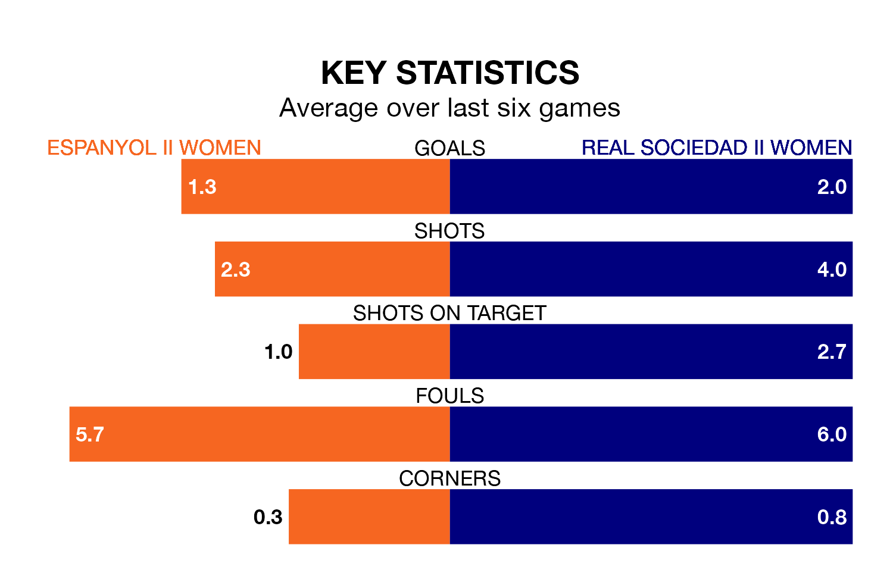

Relegation candidates Real Sociedad II Women face a challenge away against high-flying Espanyol II Women on Sunday.
Real Sociedad II Women are 15th in the Segunda Federación Femenina table, and have picked up seven wins and seven draws in their 22 games to date.
Espanyol II, meanwhile, are zero in the standings with 12 points, having won three and drawn three, and are 43 points behind table-toppers Real Madrid II Women.
Espanyol II are in mixed form in the Segunda Federación Femenina, with two wins and two draws from their last six games.
With a win and a draw over that period, Sociedad II Women's form is worse – they have taken four points from 18, compared to the hosts' eight.
With 22 goals in 22 games so far this season, Espanyol II are the league's joint--6th-lowest scorers with 1.0 goals per game. And they are conceding more than average, letting in 51 goals at a rate of 2.3 per game.
The away team, meanwhile, are average scorers, with 1.3 goals per game. They have conceded 1.2 goals per game.
Espanyol II's last match was on February 25, a 1-1 draw against Rayo Vallecano Women, with getting the goal for Espanyol II.
Sociedad II Women drew 1-1 with Pradejón Women last time out, on February 24, with on the scoresheet.
Updated: 09:34 (UTC), 08/03/24